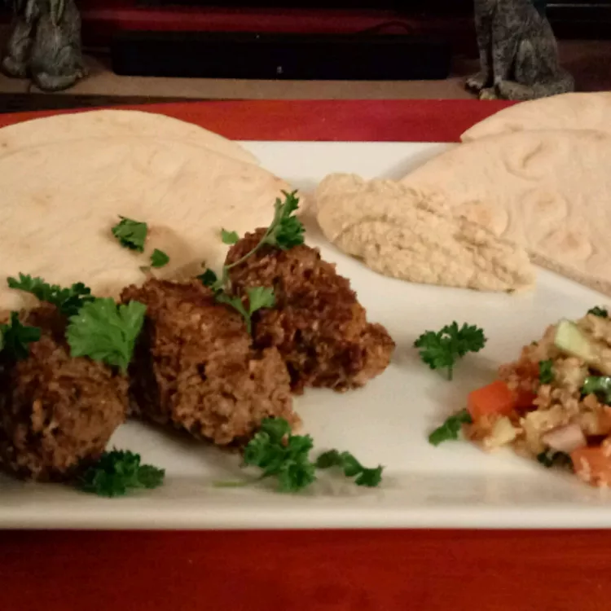

Note: This webpage was made for educational purposes. You can view the original recipe webpage here.
Kibbeh is a wonderful dish from the Middle East traditionally made with lamb meat but beef is acceptable, too. I prefer it made into patties and fried in olive oil. However, it is most often found in restaurants in baked form. Serve kibbeh with tahini, a sesame seed paste.
Place bulgur in a microwave-safe bowl and cover with water just to the top of the bulgur. Place in the microwave and cook on High 1 to 2 minutes until bulgur is swollen and the water is absorbed. Toss briefly and allow to stand until cool.
Place the mint leaves in the bowl of a food processor. Process, gradually adding onion through the feed tube, until both mint and onion are finely chopped. Stir the mint-onion mixture into the bulgur, with the cumin, allspice, salt, and pepper. Stir the bulgur mixture into the ground lamb and mix thoroughly. Using damp hands, shape the lamb mixture into small, palm-sized patties.
Place the olive oil in a skillet and heat over medium heat. Add the kibbeh patties and cook until outside is golden brown and center is cooked through, turning once, about 6 minutes on each side.